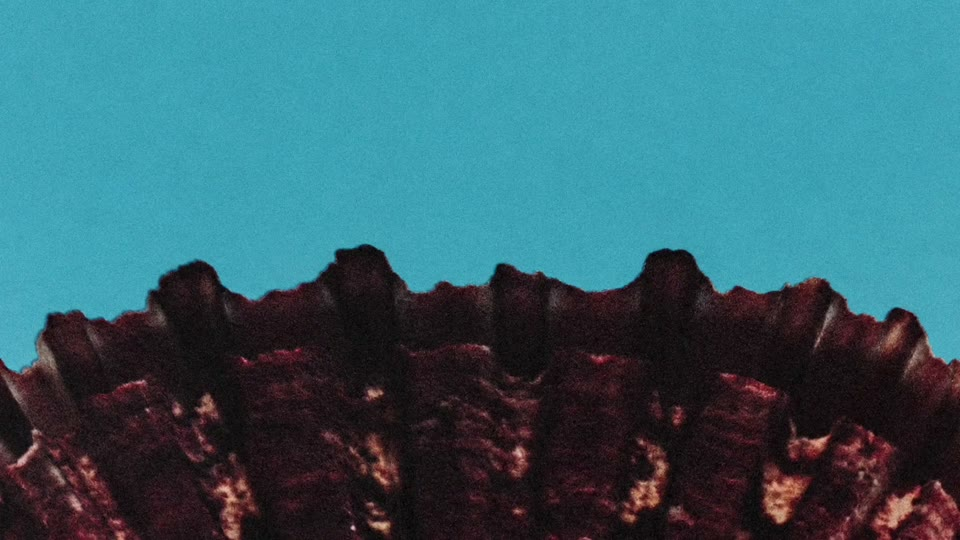
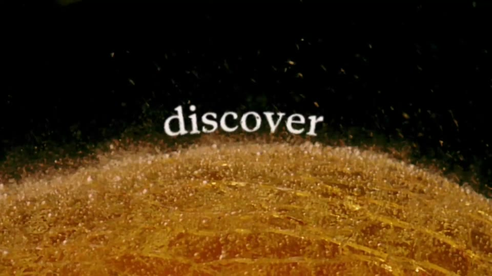
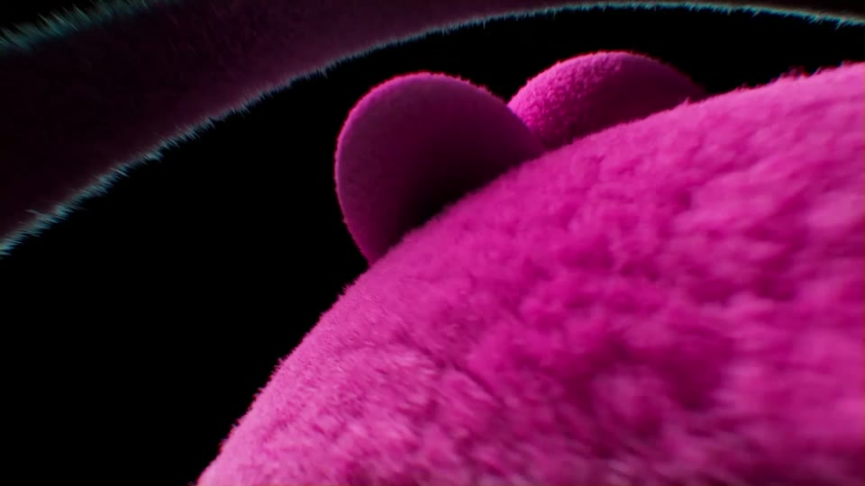
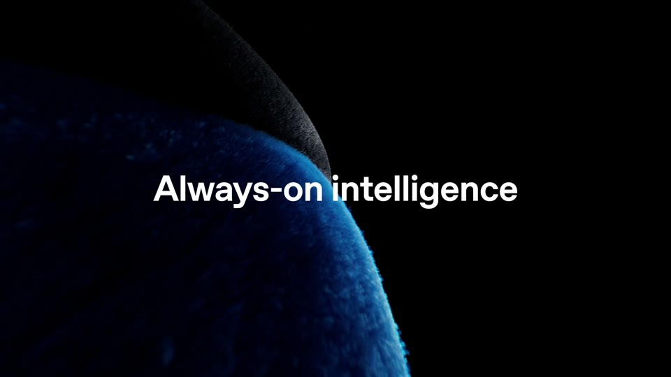
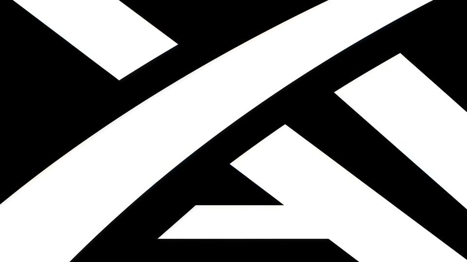
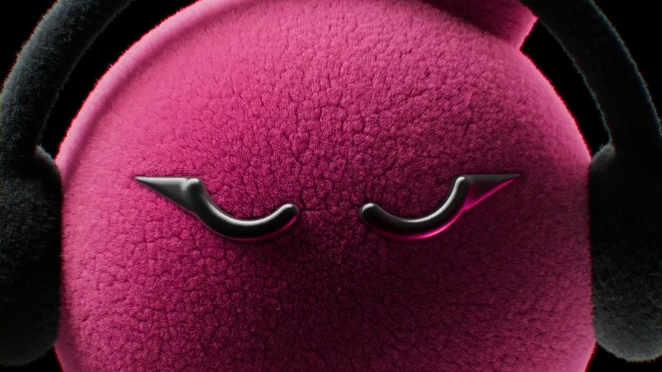

Extreme close-ups of one material fill the frame; one contour stays in the same place across the cuts; a single line of type rests on its edge; the name lands in silence.






The subject fills 45–100% of the frame; its edge is a curve with the apex at 45–55% of height.
Negative space is black or one colour; rim light on the edge; grain.
One saturated hue per shot, or the material’s real colour.
Cuts land on the music grid (~0.5 s), doubling in the second half; or three shots of 0.8–1.1 s.
One line (7–8.5% of height) blurs in on the edge; the words grow shot by shot.
The music drops out for the name.
Food at macro scale (a rice grain, a crust, a yolk, broth), where the contour is Kallo’s own: the ring gauge’s 270° arc. The arc travels from food edges into the app’s ring, which then fills with the real macros.
The most premium look; food texture is tactile and appetising.
You asked for no direct copy of the Opus 5.5 horizon cuts. The motif has to be Kallo’s ring, not a horizon, and the macro food photography must be excellent or it looks like stock.
Claude · Claude Opus 5.5 · 28M views
OpenAI · DevDay sting · 6M views
OpenAI · dots · 6M views
SpaceXAI · Rename sting · 4M views